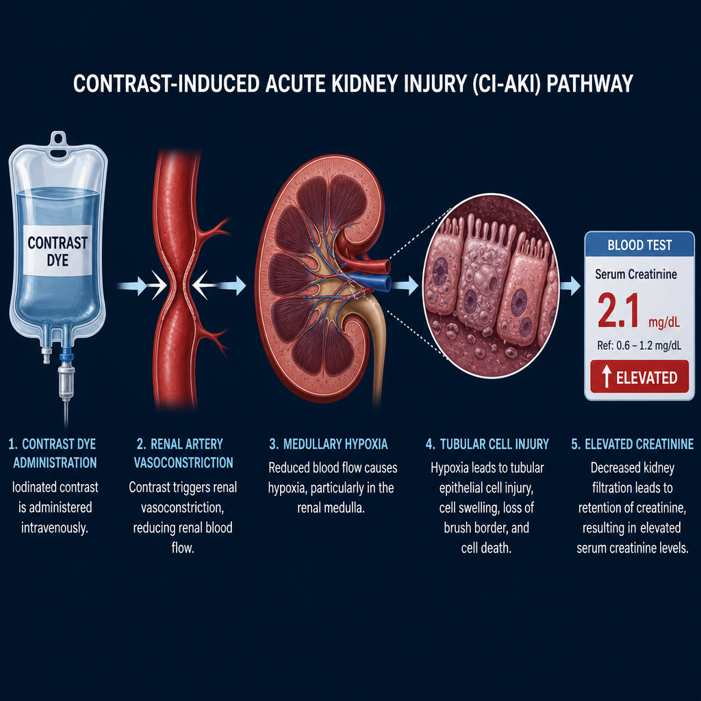
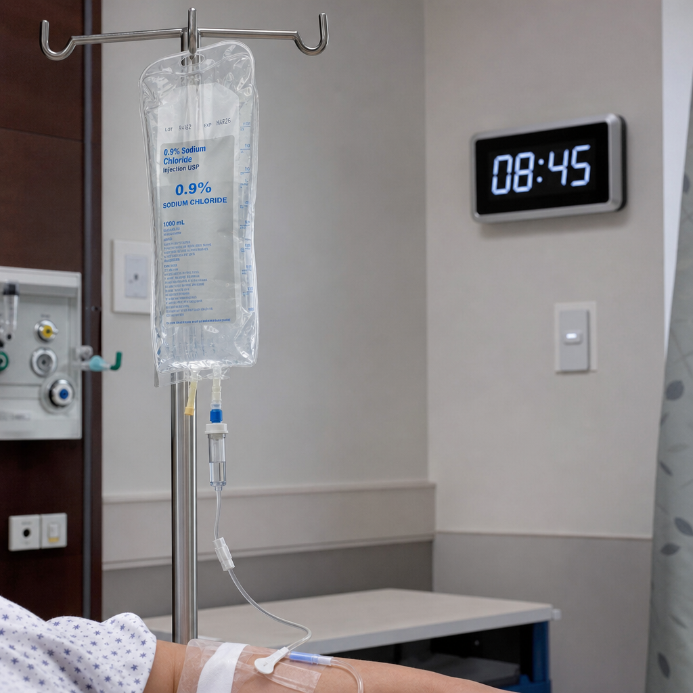
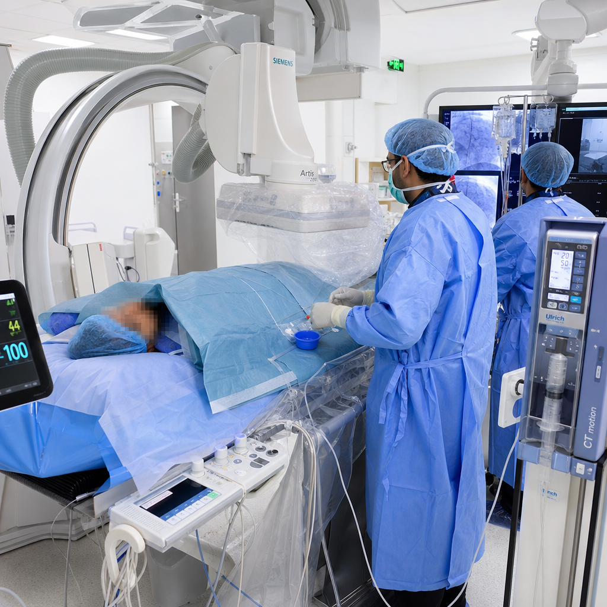
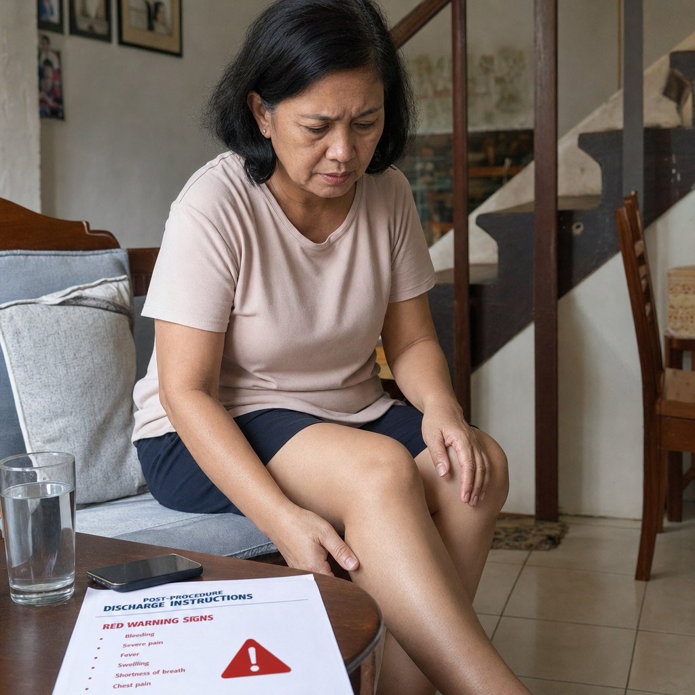

What Is Contrast-Induced Nephropathy?Ano ang Contrast-Induced Nephropathy?Unsa ang Contrast-Induced Nephropathy?Ano ing Contrast-Induced Nephropathy?
Contrast-induced nephropathy (CIN) — also called contrast-associated acute kidney injury (CA-AKI) — is a sudden deterioration of kidney function occurring within 24–72 hours after exposure to iodinated contrast dye used in imaging procedures. It is one of the leading causes of hospital-acquired acute kidney injury and is largely preventable with proper pre-procedure management.Ang contrast-induced nephropathy (CIN) — tinatawag din na contrast-associated acute kidney injury (CA-AKI) — ay isang biglaang pagbaba ng kakayahan ng bato na nangyayari sa loob ng 24–72 oras pagkatapos malantad sa iodinated contrast dye na ginagamit sa mga pamamaraan ng imaging. Ito ay isa sa mga nangungunang sanhi ng hospital-acquired acute kidney injury at malaking bahagi ay maiiwasan sa wastong pamamahala bago ang pamamaraan.Ang contrast-induced nephropathy (CIN) — gitawag usab nga contrast-associated acute kidney injury (CA-AKI) — usa ka kalit nga pagkadaot sa function sa kidney nga mahitabo sulod sa 24–72 ka oras pagkahuman sa pagkaladlad sa iodinated contrast dye nga gigamit sa mga imaging procedure. Kini usa sa mga nanguna nga hinungdan sa hospital-acquired acute kidney injury ug kadaghanan mapugngan pinaagi sa hustong pamamahala sa wala pa ang procedure.Ing contrast-induced nephropathy (CIN) — tinatawag din na contrast-associated acute kidney injury (CA-AKI) — ya metung a biglaang pagbaba ning kakayahan nining batu na nangyayari sa loob ning 24–72 oras kapabanuan malantad sa iodinated contrast dye na ginagamit sa deng pamamaraan ning imaging. Ini ya isa king deng nangungunang sanhi ning hospital-acquired acute kidney injury at malda a bahagi ya maiiwasan sa wastong pamamahala bago ing pamamaraan.

Contrast dye causes kidney injury through two simultaneous mechanisms — direct tubular cell toxicity and renal vasoconstriction leading to medullary hypoxia. Both are worsened by pre-existing CKD, dehydration, and diabetes.Ang contrast dye ay nagdudulot ng pinsala sa bato sa pamamagitan ng dalawang sabay na mekanismo — direktang toxicity sa tubular cells at vasoconstriction ng bato na nagdudulot ng hypoxia sa medulla. Ang parehong ito ay pinalala ng umiiral na CKD, dehydration, at diabetes.Ang contrast dye nagdaot sa kidney pinaagi sa duha ka dungan nga mekanismo — direkta nga toxicity sa tubular cells ug renal vasoconstriction nga nagdala sa medullary hypoxia. Ang duha gipagrabe sa naa nang CKD, dehydration, ug diabetes.Ing contrast dye ya nagdudulot ning pinsala sa batu sa pamamagitan ning dalawang sabay na mekanismo — direktang toxicity sa tubular cells at vasoconstriction nining batu na nagdudulot ning hypoxia sa medulla. Ing parehong ini ya pinalala ning umiiral na CKD, dehydration, at diabetes.
Who Is at Highest Risk?Sino ang may Pinakamataas na Panganib?Kinsa ang Naa sa Pinakataas nga Risk?Sino ing may Pinakamatas a Panganib?
Highest risk — requires full protocolPinakamataas na panganib — nangangailangan ng buong protokolPinakataas nga risk — kinahanglan ang bug-os nga protocolPinakamatas a panganib — nangangailangan ning buong protokol
CKD Stage 3b–5 (eGFR <45 mL/min) · Diabetic nephropathy · Heart failure with low cardiac output · Volume depletion/dehydration · Large contrast volumes (>100 mL) · Intra-arterial contrast (angiograms, cardiac catheterization) · Multiple procedures within 72 hours · Already elevated creatinine baseline.CKD Stage 3b–5 (eGFR <45 mL/min) · Diabetic nephropathy · Kabiguan ng puso na may mababang cardiac output · Volume depletion/dehydration · Malalaking dami ng contrast (>100 mL) · Intra-arterial contrast (angiograms, cardiac catheterization) · Maramihang pamamaraan sa loob ng 72 oras · Creatinine na mataas na sa baseline.CKD Stage 3b–5 (eGFR <45 mL/min) · Diabetic nephropathy · Kapakyasan sa puso nga may ubos nga cardiac output · Volume depletion/dehydration · Dagkong gidaghanon sa contrast (>100 mL) · Intra-arterial contrast (angiograms, cardiac catheterization) · Daghang procedure sulod sa 72 ka oras · Creatinine nga taas na sa baseline.CKD Stage 3b–5 (eGFR <45 mL/min) · Diabetic nephropathy · Kabiguan nining pusu na may mababang cardiac output · Volume depletion/dehydration · Malalaking dami ning contrast (>100 mL) · Intra-arterial contrast (angiograms, cardiac catheterization) · Maramihang pamamaraan sa loob ning 72 oras · Creatinine na matas a sa baseline.
Moderate risk — protocol recommendedKatamtamang panganib — inirerekomenda ang protokolKatunayan nga risk — girekomenda ang protocolKatamtamang panganib — inirerekomenda ing protokol
CKD Stage 3a (eGFR 45–59) · Diabetes without nephropathy · NSAID use · ACE inhibitor or ARB (hold 24–48h before procedure) · Metformin use (must be held) · Age >75 years · Single kidney · Contrast volume 50–100 mL · Intravenous contrast (CT scan).CKD Stage 3a (eGFR 45–59) · Diabetes na walang nephropathy · Paggamit ng NSAID · ACE inhibitor o ARB (ihinto 24–48h bago ang pamamaraan) · Paggamit ng Metformin (kailangang ihinto) · Edad >75 taon · Iisang bato · Dami ng contrast 50–100 mL · Intravenous contrast (CT scan).CKD Stage 3a (eGFR 45–59) · Diabetes nga walay nephropathy · Paggamit sa NSAID · ACE inhibitor o ARB (ihunong 24–48h sa wala pa ang procedure) · Paggamit sa Metformin (kinahanglan ihunong) · Edad >75 tuig · Usa ka kidney · Gidaghanon sa contrast 50–100 mL · Intravenous contrast (CT scan).CKD Stage 3a (eGFR 45–59) · Diabetes na alang nephropathy · Paggamit ning NSAID · ACE inhibinir o ARB (ihinto 24–48h bago ing pamamaraan) · Paggamit ning Metformin (kailangang ihinto) · Edad >75 banua · Imetung a batu · Dami ning contrast 50–100 mL · Intravenous contrast (CT scan).
Low risk — standard careMababang panganib — karaniwang pag-aalagaUbos nga risk — standard nga pag-atimanMababang panganib — karaniwang pag-aalaga
eGFR >60 mL/min with no diabetes or heart failure · Normal hydration status · Small contrast volume (<50 mL) · Low-osmolar or iso-osmolar contrast agent · Intravenous route only · No concurrent nephrotoxins. Risk of CIN in this group is <1%.eGFR >60 mL/min na walang diabetes o kabiguan ng puso · Normal na antas ng hydration · Maliit na dami ng contrast (<50 mL) · Low-osmolar o iso-osmolar contrast agent · Intravenous route lamang · Walang kasabay na nephrotoxins. Ang panganib ng CIN sa grupong ito ay <1%.eGFR >60 mL/min nga walay diabetes o kapakyasan sa puso · Normal nga hydration · Gamay nga gidaghanon sa contrast (<50 mL) · Low-osmolar o iso-osmolar contrast agent · Intravenous route lamang · Walay dungan nga nephrotoxins. Ang risk sa CIN sa grupo nga kini <1%.eGFR >60 mL/min na alang diabetes o kabiguan nining pusu · Normal na antas ning hydration · Maliit na dami ning contrast (<50 mL) · Low-osmolar o iso-osmolar contrast agent · Intravenous route lamang · Alang kasabay na nephrotoxins. Ing panganib ning CIN sa grupong ini ya <1%.
Always disclose your CKD stage and latest creatinine/eGFR to the radiology and procedural team before any contrast study. Many CIN cases are preventable simply by ensuring the team knows your kidney function in advance.Laging ibunyag ang inyong CKD stage at pinakabagong creatinine/eGFR sa radiology at procedural team bago ang anumang contrast study. Maraming kaso ng CIN ay maiiwasan sa pamamagitan lamang ng pagtitiyak na alam ng team ang inyong kidney function nang maaga.Kanunay ibunyag ang inyong CKD stage ug pinakabag-o nga creatinine/eGFR sa radiology ug procedural team sa wala pa ang bisan unsang contrast study. Daghang kaso sa CIN mapugngan pinaagi lang sa pagsiguro nga nahibalo ang team sa imong kidney function nga daan.Pirming ibunyag ing inyong CKD stage at pinakabagong creatinine/eGFR sa radiology at procedural team bago ing anumang contrast study. Maraming kaso ning CIN ya maiiwasan sa pamamagitan lamang ning pagtitiyak na alam ning team ing inyoning kidney function nang maaga.
Always tell your doctor and radiologist that you have CKD before any procedure with contrastLaging sabihin sa inyong doktor at radiologist na mayroon kayong CKD bago ang anumang pamamaraan na may contrastKanunay sultihi ang inyong doktor ug radiologist nga naa kamoy CKD sa wala pa ang bisan unsang procedure nga adunay contrastPirming sabihin king ka doktor at radiologist na mayroon kayung CKD bago ing anumang pamamaraan na may contrast
Many CIN cases occur because the radiology team was not informed of pre-existing CKD. When scheduling any CT scan, angiogram, cardiac catheterization, or other contrast procedure, explicitly state your CKD stage and latest creatinine/eGFR. Request that your nephrologist be consulted before the procedure if your eGFR is below 45 mL/min.Maraming kaso ng CIN ang nangyayari dahil ang radiology team ay hindi naaabisuhan ng umiiral na CKD. Kapag nagtatakda ng CT scan, angiogram, cardiac catheterization, o ibang contrast procedure, hayagang sabihin ang inyong CKD stage at pinakabagong creatinine/eGFR. Humingi na makipag-konsulta ang inyong nephrologist bago ang pamamaraan kung ang inyong eGFR ay nasa ibaba ng 45 mL/min.Daghang kaso sa CIN ang mahitabo tungod kay ang radiology team wala gipahibalo sa naa nang CKD. Pag mag-iskedyul sa CT scan, angiogram, cardiac catheterization, o uban pang contrast procedure, hayag nga itug-an ang inyong CKD stage ug pinakabag-o nga creatinine/eGFR. Pangayoa nga ang inyong nephrologist makonsulta sa wala pa ang procedure kon ang inyong eGFR ubos sa 45 mL/min.Maraming kaso ning CIN ing nangyayari dahil ing radiology team ya ali naaabisuhan ning umiiral na CKD. Nung nagtatakda ning CT scan, angiogram, cardiac catheterization, o ibang contrast procedure, hayagang sabihin ing inyong CKD stage at pinakabagong creatinine/eGFR. Humingi na makipag-konsulta ing inyong nephrologist bago ing pamamaraan nung ing inyong eGFR ya nasa ibaba ning 45 mL/min.
How CIN Is DiagnosedPaano Nasusuri ang CINUnsaon Pag-diagnose sa CINPaano Nasusuri ing CIN
Diagnostic criteriaPamantayan sa diagnosisCriteria sa diagnosisPamantayan sa diagnosis
Rise in serum creatinine of ≥0.3 mg/dL (26.5 µmol/L) OR ≥1.5× baseline within 48 hours of contrast exposure, without another identifiable cause. The creatinine typically peaks at 3–5 days and returns to baseline by 14 days. Persistent elevation beyond 3 weeks suggests permanent kidney damage.Pagtaas ng serum creatinine ng ≥0.3 mg/dL (26.5 µmol/L) O ≥1.5× ng baseline sa loob ng 48 oras pagkatapos ng contrast exposure, nang walang ibang malinaw na sanhi. Ang creatinine ay karaniwang tumataas sa rurok nito sa loob ng 3–5 araw at bumabalik sa baseline sa loob ng 14 na araw. Ang patuloy na pagtaas nang higit sa 3 linggo ay nagpapahiwatig ng permanenteng pinsala sa bato.Pagtaas sa serum creatinine nga ≥0.3 mg/dL (26.5 µmol/L) O ≥1.5× sa baseline sulod sa 48 ka oras pagkahuman sa contrast exposure, nga walay laing maklaro nga hinungdan. Ang creatinine kasagaran moabot sa pinakataas sulod sa 3–5 ka adlaw ug mobalik sa baseline sulod sa 14 ka adlaw. Ang padayon nga pagtaas nga molapas sa 3 semana nagpakita sa permanenteng kadaot sa kidney.Pagtaas ning serum creatinine ning ≥0.3 mg/dL (26.5 µmol/L) O ≥1.5× ning baseline sa loob ning 48 oras kapabanuan ning contrast exposure, nang alang ibang malinaw na sanhi. Ing creatinine ya karaniwang tumataas sa rurok nini sa loob ning 3–5 aldo at bumabalik sa baseline sa loob ning 14 na aldo. Ing patuloy na pagtaas nang higit sa 3 lutu ya nagpapahiwatig ning permanenteng pinsala sa batu.
What to monitor after a contrast procedureAno ang dapat bantayan pagkatapos ng contrast procedureUnsa ang bantayan pagkahuman sa contrast procedureAno ing dapat bantayan kapabanuan ning contrast procedure
Baseline creatinine and eGFR before the procedure. Repeat creatinine at 24–48 hours and at 72 hours post-procedure in high-risk patients. Urine output monitoring (decreased output is an early warning sign). Report any decrease in urine volume, swelling, or shortness of breath immediately.Baseline creatinine at eGFR bago ang pamamaraan. Ulitin ang creatinine sa 24–48 oras at sa 72 oras pagkatapos ng pamamaraan sa mga pasyenteng may mataas na panganib. Pagsubaybay ng dami ng ihi (ang pagbaba ng dami ay isang maagang babala). Iulat agad ang anumang pagbaba ng dami ng ihi, pamamaga, o hirap sa paghinga.Baseline creatinine ug eGFR sa wala pa ang procedure. Usba ang creatinine sa 24–48 ka oras ug sa 72 ka oras human sa procedure sa mga pasyente nga high-risk. Pagbantay sa gidaghanon sa ihi (ang pagkunhod sa gidaghanon sayo nga timailhan sa problema). Sultihan dayon ang doktor kon adunay pagkunhod sa ihi, pamamaga, o kapit-kinabuhi sa paghinga.Baseline creatinine at eGFR bago ing pamamaraan. Ulitin ing creatinine sa 24–48 oras at sa 72 oras kapabanuan ning pamamaraan sa deng pasyenteng may matas a panganib. Pagsubaybay ning dami ning ihi (ang pagbaba ning dami ya metung a maagang babala). Iulat agad ing anumang pagbaba ning dami ning ihi, pamamaga, o hirap sa paghinga.
How CIN Is PreventedPaano Maiiwasan ang CINUnsaon Pagpugong sa CINPaano Maiiwasan ing CIN

Intravenous saline hydration is the single most effective CIN prevention strategy. It dilutes the contrast, maintains renal perfusion, and speeds excretion. All other interventions are secondary to adequate IV hydration.Ang intravenous saline hydration ang pinaka-epektibong estratehiya sa pag-iwas sa CIN. Pinipigilan nito ang contrast, pinapanatili ang renal perfusion, at pinabibilis ang pag-alis. Ang lahat ng iba pang interbensyon ay pangalawa sa sapat na IV hydration.Ang intravenous saline hydration ang pinaka-epektibo nga estratehiya sa pagpugong sa CIN. Gipahumok niini ang contrast, gipadayon ang renal perfusion, ug gipadali ang pagtangtang. Ang tanan pang uban nga interbensyon ikaduhang importansya sa saktong IV hydration.Ing intravenous saline hydration ing pinaka-epektibong estratehiya sa pag-iwas sa CIN. Pinipigilan nini ing contrast, pinapanatili ing renal perfusion, at pinabibilis ing pag-alis. Ing lahat ning iba pang interbensyon ya pangalawa sa sapat na IV hydration.
| InterventionInterbensyonInterbensyonInterbensyon | EvidenceEbidensyaEbidensyaEbidensya | Standard protocolKaraniwang protokolStandard nga protocolKaraniwang protokol |
|---|---|---|
| IV Normal Saline hydrationIV Normal Saline hydrationIV Normal Saline hydrationIV Normal Saline hydration | Strong — reduces CIN by 50–60%Malakas — nagbabawas ng CIN ng 50–60%Kusog — nagpababa sa CIN og 50–60%Malakas — nagbabawas ning CIN ning 50–60% | 1 mL/kg/hr for 12 hrs before and 6–12 hrs after procedure1 mL/kg/oras sa loob ng 12 oras bago at 6–12 oras pagkatapos ng pamamaraan1 mL/kg/oras sulod sa 12 ka oras sa wala pa ug 6–12 ka oras human sa procedure1 mL/kg/oras sa loob ning 12 oras bago at 6–12 oras kapabanuan ning pamamaraan |
| Low-osmolar / iso-osmolar contrastLow-osmolar / iso-osmolar contrastLow-osmolar / iso-osmolar contrastLow-osmolar / iso-osmolar contrast | Strong — less nephrotoxic than high-osmolarMalakas — mas mababa ang nephrotoxicity kaysa high-osmolarKusog — dili kaayo nephrotoxic kaysa high-osmolarMalakas — mas mababa ing nephrotoxicity kaysa high-osmolar | Always use in CKD — never high-osmolar in eGFR <45Palaging gamitin sa CKD — huwag gamitin ang high-osmolar kung eGFR <45Kanunay gamiton sa CKD — dili gamiton ang high-osmolar kon eGFR <45Papirming gamitin sa CKD — eka gamitin ing high-osmolar nung eGFR <45 |
| Minimum contrast volumePinakamababang dami ng contrastPinakagamay nga gidaghanon sa contrastPinakamababang dami ning contrast | Strong — dose-dependent toxicityMalakas — toxicity na nakadepende sa dosisKusog — toxicity nga nagsalig sa dosisMalakas — toxicity na nakadepende sa dosis | Target <100 mL; maximum safe dose = 5 × body weight (kg) ÷ creatinineTarget <100 mL; pinakamataas na ligtas na dosis = 5 × timbang ng katawan (kg) ÷ creatinineTarget <100 mL; pinakataas nga luwas nga dosis = 5 × timbang sa lawas (kg) ÷ creatinineTarget <100 mL; pinakamatas a ligtas na dosis = 5 × timbang nining bangkî (kg) ÷ creatinine |
| Hold nephrotoxic drugs 24–48hIhinto ang nephrotoxic na gamot 24–48hIhunong ang nephrotoxic nga gamot 24–48hIhinto ing nephrotoxic na gamut 24–48h | Moderate — reduces additive toxicityKatamtaman — nagbabawas ng additive toxicityKasarangan — nagpababa sa additive toxicityKatamtaman — nagbabawas ning additive toxicity | NSAIDs, aminoglycosides, metformin, ACE/ARBs held before procedureNSAIDs, aminoglycosides, metformin, ACE/ARBs ay ihinto bago ang pamamaraanNSAIDs, aminoglycosides, metformin, ACE/ARBs ihunong sa wala pa ang procedureNSAIDs, aminoglycosides, metformin, ACE/ARBs ya ihinto bago ing pamamaraan |
| N-acetylcysteine (NAC)N-acetylcysteine (NAC)N-acetylcysteine (NAC)N-acetylcysteine (NAC) | Weak / controversial — 2024 meta-analyzes inconclusiveMahina / kontrobersyal — 2024 meta-analyzes ay hindi pa tiyakMahuyang / kontrobersyal — 2024 meta-analyzes walay klaro nga konklusyonMahina / kontrobersyal — 2024 meta-analyzes ya ali pa tiyak | No longer routinely recommended by most guidelinesHindi na karaniwang inirerekomenda ng karamihang mga alituntuninDili na kasagarang girekomenda sa kadaghanan nga mga guidelineAli na karaniwang inirerekomenda ning karamihdeng alituntunin |
| Sodium bicarbonate infusionSodium bicarbonate infusionSodium bicarbonate infusionSodium bicarbonate infusion | Moderate — no benefit over NS in large trialsKatamtaman — walang kalamangan kaysa NS sa malalaking trialKasarangan — walay bentahe kaysa NS sa dagkong mga trialKatamtaman — alang kalamangan kaysa NS sa malalaking trial | Alternative to NS if patient cannot tolerate high sodium loadAlternatibo sa NS kung ang pasyente ay hindi makatiis ng mataas na sodium loadAlternatibo sa NS kon ang pasyente dili makaya ang taas nga sodium loadAlternatibo sa NS nung ing pasyente ya ali makatiis ning matas a sodium load |
| Statins (rosuvastatin) pre-procedureStatins (rosuvastatin) bago ang pamamaraanStatins (rosuvastatin) sa wala pa ang procedureStatins (rosuvastatin) bago ing pamamaraan | Emerging — some benefit in high-risk patientsUmuusbong — may ilang benepisyo sa mga pasyenteng may mataas na panganibBag-ong ebidensya — may pipila ka benepisyo sa mga high-risk nga pasyenteUmuusbong — may ilang benepisyo sa deng pasyenteng may matas a panganib | May be started 2–3 days before in very high-risk casesMaaaring simulan 2–3 araw bago sa mga kaso na may napakataas na panganibPwede sugdan 2–3 ka adlaw sa wala pa sa mga kaso nga napakataas ang riskMaaaring simulan 2–3 aldo bago sa deng kaso na may napakataas na panganib |
CIN Risk by Procedure TypePanganib ng CIN ayon sa Uri ng PamamaraanRisk sa CIN Matod sa Klase sa ProcedurePanganib ning CIN ayon sa Uri ning Pamamaraan
Highest CIN risk proceduresMga pamamaraan na may pinakamataas na panganib ng CINMga procedure nga pinakataas ang risk sa CINDeng pamamaraan na may pinakamatas a panganib ning CIN
Cardiac catheterization / coronary angiography — intra-arterial contrast, large volumes, often emergency setting. CT angiography (CTA) — large contrast volumes. Peripheral vascular angiography — large intra-arterial volumes. Interventional radiology procedures — repeated contrast injections. All require full prevention protocol in CKD patients.Cardiac catheterization / coronary angiography — intra-arterial contrast, malalaking dami, madalas na sitwasyong emergency. CT angiography (CTA) — malalaking dami ng contrast. Peripheral vascular angiography — malalaking intra-arterial na dami. Interventional radiology procedures — paulit-ulit na injeksyon ng contrast. Lahat ay nangangailangan ng buong protokol sa mga pasyenteng may CKD.Cardiac catheterization / coronary angiography — intra-arterial contrast, dagkong gidaghanon, sagad emergency. CT angiography (CTA) — dagkong gidaghanon sa contrast. Peripheral vascular angiography — dagkong intra-arterial nga gidaghanon. Interventional radiology procedures — sublisubli nga injeksyon sa contrast. Tanan nanginahanglan sa bug-os nga protocol sa mga pasyente nga adunay CKD.Cardiac catheterization / coronary angiography — intra-arterial contrast, malalaking dami, madalas na sitwasyong emergency. CT angiography (CTA) — malalaking dami ning contrast. Peripheral vascular angiography — malalaking intra-arterial na dami. Interventional radiology procedures — paulit-ulit na injeksyon ning contrast. Lahat ya nangangailangan ning buong protokol sa deng pasyenteng may CKD.
Moderate CIN riskKatamtamang panganib ng CINKasarangan nga risk sa CINKatamtamang panganib ning CIN
CT scan with IV contrast — standard diagnostic CT (chest, abdomen, pelvis). CT pulmonary angiography (CTPA) for PE diagnosis. Intravenous route is less nephrotoxic than intra-arterial, but CKD patients still need hydration protocol and contrast volume minimization.CT scan na may IV contrast — standard diagnostic CT (dibdib, tiyan, pelvis). CT pulmonary angiography (CTPA) para sa diagnosis ng PE. Ang intravenous route ay mas mababa ang nephrotoxicity kaysa intra-arterial, ngunit ang mga pasyenteng may CKD ay nangangailangan pa rin ng hydration protocol at pagbabawas ng dami ng contrast.CT scan nga adunay IV contrast — standard diagnostic CT (dughan, tiyan, pelvis). CT pulmonary angiography (CTPA) alang sa diagnosis sa PE. Ang intravenous route dili kaayo nephrotoxic kaysa intra-arterial, apan ang mga pasyente nga adunay CKD kinahanglan pa gihapon sa hydration protocol ug pagpaminus sa gidaghanon sa contrast.CT scan na may IV contrast — standard diagnostic CT (dibdib, tiyan, pelvis). CT pulmonary angiography (CTPA) para king diagnosis ning PE. Ing intravenous route ya mas mababa ing nephrotoxicity kaysa intra-arterial, ngarud deng pasyenteng may CKD ya nangangailangan pa rin ning hydration protocol at pagbabawas ning dami ning contrast.

Cardiac catheterization carries the highest CIN risk — intra-arterial contrast, large volumes, and often emergency conditions in patients with pre-existing cardiovascular disease who already have compromised kidney function. Full prevention protocol is mandatory.Ang cardiac catheterization ay nagdadala ng pinakamataas na panganib ng CIN — intra-arterial contrast, malalaking dami, at madalas na kondisyong emergency sa mga pasyenteng may umiiral na cardiovascular disease na may kompromisadong kidney function. Ang buong protokol ng pag-iwas ay sapilitan.Ang cardiac catheterization nagdala sa pinakataas nga risk sa CIN — intra-arterial contrast, dagkong gidaghanon, ug sagad emergency nga kondisyon sa mga pasyente nga adunay naa nang cardiovascular disease nga adunay kompromisadong kidney function. Ang bug-os nga protocol sa pagpugong gikinahanglan.Ing cardiac catheterization ya nagdadala ning pinakamatas a panganib ning CIN — intra-arterial contrast, malalaking dami, at madalas na kondisyong emergency sa deng pasyenteng may umiiral na cardiovascular disease na may kompromisadoning kidney function. Ing buong protokol ning pag-iwas ya sapilitan.
Consider contrast-free alternatives when possibleIsaalang-alang ang mga alternatibong walang contrast kung posibleIkonsiderar ang mga alternatibo nga walay contrast kon posibleIsaalang-alang deng alternatibong alang contrast nung posible
Many diagnostic questions can be answered without iodinated contrast. MRI with gadolinium (note: gadolinium carries its own CKD risk — NSF — in severe CKD), ultrasound, non-contrast CT, and nuclear medicine scans are often adequate alternatives. Always ask your doctor if a contrast-free imaging option exists before proceeding with contrast studies in advanced CKD.Maraming diagnostic na tanong ang masasagot nang walang iodinated contrast. MRI na may gadolinium (paalala: ang gadolinium ay may sariling panganib sa CKD — NSF — sa matinding CKD), ultrasound, non-contrast CT, at nuclear medicine scans ay madalas na sapat na mga alternatibo. Laging tanungin ang inyong doktor kung mayroon bang opsyon sa imaging na walang contrast bago magpatuloy sa mga contrast study sa advanced CKD.Daghang diagnostic nga pangutana ang masulbad nga walay iodinated contrast. MRI nga adunay gadolinium (hinumdomi: ang gadolinium adunay kaugalingon nga risk sa CKD — NSF — sa grabe nga CKD), ultrasound, non-contrast CT, ug nuclear medicine scans sagad igo nga mga alternatibo. Kanunay pangutana sa inyong doktor kon adunay imaging nga opsyon nga walay contrast sa wala pa magpadayon sa contrast studies sa advanced CKD.Maraming diagnostic na tanong ing masasagot nang alang iodinated contrast. MRI na may gadolinium (paalala: ing gadolinium ya may sariling panganib sa CKD — NSF — sa matinding CKD), ultrasound, non-contrast CT, at nuclear medicine scans ya madalas na sapat na deng alternatibo. Pirming tanungin ing inyong doktor nung mayroon bang opsyon sa imaging na alang contrast bago magpatuloy sa deng contrast study sa advanced CKD.
Dialysis Patients and Contrast DyeMga Pasyenteng nasa Dialysis at Contrast DyeMga Pasyente sa Dialysis ug Contrast DyeDeng Pasyenteng nasa Dialysis at Contrast Dye
Dialysis patients can receive contrastAng mga pasyenteng nasa dialysis ay maaaring makatanggap ng contrastAng mga pasyente sa dialysis pwede makadawat sa contrastDeng pasyenteng nasa dialysis ya maaaring makatanggap ning contrast
Dialysis patients have essentially no residual kidney function to protect — contrast dye cannot cause CIN in an already non-functional kidney. However, contrast dye accumulates in dialysis patients since it is not cleared between sessions. Schedule dialysis within 24 hours of contrast administration to clear the dye and prevent it from acting as a systemic vasoconstrictor and oxidative stressor.Ang mga pasyenteng nasa dialysis ay halos walang natitirang function ng bato na dapat protektahan — ang contrast dye ay hindi makapagdudulot ng CIN sa bato na hindi na gumagana. Gayunpaman, ang contrast dye ay nag-iipon sa mga pasyenteng nasa dialysis dahil hindi ito nililinis sa pagitan ng mga sesyon. Itakda ang dialysis sa loob ng 24 oras pagkatapos ng contrast administration upang malinis ang dye at mapigilan itong kumilos bilang systemic vasoconstrictor at oxidative stressor.Ang mga pasyente sa dialysis halos walay nabilin nga function sa kidney nga protektahan — ang contrast dye dili makapahimong CIN sa kidney nga dili na nagtrabaho. Apan, ang contrast dye nagtipon sa mga pasyente sa dialysis tungod kay dili kini nailabas tali sa mga sesyon. I-iskedyul ang dialysis sulod sa 24 ka oras human sa contrast administration aron mailabas ang dye ug mapugngan kini sa pagbuhat nga systemic vasoconstrictor ug oxidative stressor.Deng pasyenteng nasa dialysis ya halos alang natitirang function nining batu na dapat protektahan — ing contrast dye ya ali manungdudulot ning CIN sa batu na ali na gumagana. Gayunpaman, ing contrast dye ya nag-iipon sa deng pasyenteng nasa dialysis dahil ali ini nililinis sa pagitan ning deng sesyon. Itakda ing dialysis sa loob ning 24 oras kapabanuan ning contrast administration para malinis ing dye at mapigilan ining kumilos bilang systemic vasoconstrictor at oxidative stressor.
Protecting residual function in early dialysisPagprotekta ng natitirang function sa maagang dialysisPagpanalipod sa nabilin nga function sa sayo nga dialysisPagprotekta ning natitirang function sa maagang dialysis
Patients who recently started dialysis and still have some residual urine output (>200 mL/day) should be managed as CKD patients — residual function improves quality of life, reduces dialysis frequency needs, and is worth protecting. Discuss with your nephrologist before any contrast procedure in the first 1–2 years of dialysis.Ang mga pasyenteng nagsimulang mag-dialysis kamakailan at mayroon pa ring ilang natitirang output ng ihi (>200 mL/araw) ay dapat pamahalaan bilang mga pasyenteng may CKD — ang natitirang function ay nagpapabuti ng kalidad ng buhay, nagbabawas ng pangangailangan sa dalas ng dialysis, at karapat-dapat na protektahan. Makipag-usap sa inyong nephrologist bago ang anumang contrast procedure sa unang 1–2 taon ng dialysis.Ang mga pasyente nga bag-o lamang nagsugod sa dialysis ug aduna pa'y pipila ka nabilin nga output sa ihi (>200 mL/adlaw) kinahanglan dumalagang CKD nga pasyente — ang nabilin nga function nagpabuti sa kalidad sa kinabuhi, nagpababa sa gikinahanglan nga kasubsob sa dialysis, ug angay protektahan. Makiistorya sa inyong nephrologist sa wala pa ang bisan unsang contrast procedure sulod sa unang 1–2 ka tuig sa dialysis.Deng pasyenteng nagsimulang mag-dialysis kamakailan at mayroon pa ring ilang natitirang output ning ihi (>200 mL/aldo) ya dapat pamahalaan bildeng pasyenteng may CKD — ing natitirang function ya nagpapabuti ning kalidad nining biye, nagbabawas ning pangangailangan sa dalas ning dialysis, at karapat-dapat na protektahan. Makipag-usap king ka nephrologist bago ing anumang contrast procedure sa unang 1–2 banua ning dialysis.
CI-AKI Risk Calculator — Mehran Score & Maximum Safe Contrast Volume
Calculate the Mehran risk score for contrast-induced acute kidney injury before any procedure involving iodinated contrast dye (CT scan with contrast, coronary angiogram, angioplasty). Also calculates the maximum safe contrast volume for your kidney function.
⚕ Mehran score components: eGFR scoring (2–6pts based on GFR), hypotension (5pts), IABP (5pts), CHF (5pts), age >75 (4pts), anemia (3pts), DM (3pts), contrast volume (1pt per 100mL). CI-AKI risk: ≤5 = 7.5%; 6–10 = 14%; 11–16 = 26.1%; >16 = 57.3% (Mehran et al., JACC 2004). Max safe contrast volume = 5 mL × body weight (kg) ÷ serum creatinine (mg/dL). This tool supports procedural risk counseling — final decisions require cardiologist/radiologist assessment.
After Your Contrast Procedure — What to Watch ForPagkatapos ng Inyong Contrast Procedure — Ano ang Dapat BantayanHuman sa Inyong Contrast Procedure — Unsa ang BantayanKapabanuan ning Inyong Contrast Procedure — Ano ing Dapat Bantayan

CIN typically develops 24–72 hours after contrast exposure. Knowing the warning signs — reduced urine output, rapid swelling, shortness of breath — allows early intervention before kidney injury becomes severe or irreversible.Ang CIN ay karaniwang nagpapaunlad 24–72 oras pagkatapos ng pagkakalantad sa contrast. Ang pagkilala sa mga babala — nabawasang output ng ihi, mabilis na pamamaga, hirap sa paghinga — ay nagbibigay-daan sa maagang interbensyon bago pa maging malubha o hindi na maibabalik ang pinsala sa bato.Ang CIN kasagaran nagpalambo 24–72 ka oras human sa pagkaladlad sa contrast. Ang pagkahibalo sa mga timailhan sa pasidaan — nabawasang output sa ihi, dali nga pamamaga, kapit-kinabuhi sa paghinga — nagpahimo sa sayo nga interbensyon sa wala pa mograbe o dili na mabawi ang kadaot sa kidney.Ing CIN ya karaniwang nagpapaunlad 24–72 oras kapabanuan ning pagkakalantad sa contrast. Ing pagkilala sa deng babala — nabawasang output ning ihi, mabilis na pamamaga, hirap sa paghinga — ya nagbibigay-daan sa maagang interbensyon bago pa maging malubha o ali na maibabalik ing pinsala sa batu.
Contact your nephrologist immediately if you notice any of these after a contrast procedure:Makipag-ugnayan agad sa inyong nephrologist kung mapansin ninyo ang alinman sa mga ito pagkatapos ng contrast procedure:Kontakon dayon ang inyong nephrologist kon mamatikdan ninyo ang bisan usa niini human sa contrast procedure:Makipag-ugnayan agad king ka nephrologist nung mapansin ninyo ing alinman sa deng ini kapabanuan ning contrast procedure:
- Significantly decreased urine output (less than half your usual)Malaking pagbaba ng dami ng ihi (mas mababa sa kalahati ng karaniwan ninyo)Dakong pagkunhod sa gidaghanon sa ihi (ubos sa katunga sa imong kasagaran)Malaking pagbaba ning dami ning ihi (mas mababa sa kalahati ning karaniwan ninyo)
- No urine output for 6+ hours despite drinking fluidsWalang ihi sa loob ng 6+ oras kahit umiinom ng likidoWalay ihi sulod sa 6+ ka oras bisan mag-inom ug tubigAlang ihi sa loob ning 6+ oras kahit umiinom ning likido
- Rapid weight gain (>1 kg/day) from fluid retentionMabilis na pagtaas ng timbang (>1 kg/araw) mula sa pagtitipon ng likidoDali nga pagtaas sa timbang (>1 kg/adlaw) gikan sa pag-atipon sa tubigMabilis na pagtaas ning timbang (>1 kg/aldo) mula sa pagtitipon ning likido
- Swelling of legs, face, or hands worsening quicklyPamamaga ng mga binti, mukha, o kamay na mabilis na lumalalaPamamaga sa mga bitiis, nawong, o kamot nga dali kaayo nagrabePamamaga ning deng binti, mukha, o kamay na mabilis na lumalala
- Shortness of breath at rest or lying flatHirap sa paghinga habang nagpapahinga o humihiga nang patagKapit-kinabuhi sa paghinga samtang nagpahulay o naghigda nga patagHirap sa paghinga habang nagpapahinga o humihiga nang patag
- Severe nausea, vomiting, or confusion (uremic symptoms)Matinding pagduduwal, pagsusuka, o kalituhan (sintomas ng uremia)Grabe nga pagsubo, pagsuka, o pagkabuang (uremic nga sintomas)Matinding pagduduwal, pagsusuka, o kalituhan (sintomas ning uremia)
Continue oral hydrationIpagpatuloy ang oral na hydrationPadayunon ang oral nga hydrationIpagpatuloy ing oral na hydration
After discharge, maintain good oral fluid intake (unless on dialysis with strict fluid restriction). Avoid dehydration from any cause — including fasting, diarrhea, or vomiting — in the 72 hours after a contrast procedure.Pagkatapos ng discharge, panatilihin ang sapat na pag-inom ng likido (maliban kung nasa dialysis na may mahigpit na paghihigpit sa likido). Iwasan ang dehydration mula sa anumang sanhi — kasama na ang pag-aayuno, pagtatae, o pagsusuka — sa loob ng 72 oras pagkatapos ng contrast procedure.Human sa discharge, padayon ug maayong pag-inom sa tubig (gawas kon naa sa dialysis nga adunay higpit nga limitasyon sa tubig). Likayi ang dehydration gikan sa bisan unsang hinungdan — lakip ang pag-ayuno, pagtae, o pagsuka — sulod sa 72 ka oras human sa contrast procedure.Kapabanuan ning discharge, panatilihin ing sapat na pag-inom ning likido (maliban nung nasa dialysis na may mahigpit na paghihigpit sa likido). Iwasan ing dehydration mula sa anumang sanhi — kasama na ing pag-aayuno, pagtatae, o pagsusuka — sa loob ning 72 oras kapabanuan ning contrast procedure.
When to restart medicationsKailan ulit simulan ang mga gamotKanus-a usbon ang mga tambalKailan ulit simulan dening gamut
NSAIDs: avoid for at least 48–72 hours post-contrast. ACE inhibitors / ARBs: resume only after creatinine is confirmed stable at 48 hours. Metformin: resume only after creatinine confirmed stable at 48 hours (risk of lactic acidosis in AKI).NSAIDs: iwasan ng hindi bababa sa 48–72 oras pagkatapos ng contrast. ACE inhibitors / ARBs: ipagpatuloy lamang pagkatapos makumpirma na ang stable na creatinine sa 48 oras. Metformin: ipagpatuloy lamang pagkatapos makumpirma na ang stable na creatinine sa 48 oras (panganib ng lactic acidosis sa AKI).NSAIDs: likayi sa labing menos 48–72 ka oras human sa contrast. ACE inhibitors / ARBs: ipadayon lamang human makumpirma nga stable ang creatinine sa 48 ka oras. Metformin: ipadayon lamang human makumpirma nga stable ang creatinine sa 48 ka oras (risk sa lactic acidosis sa AKI).NSAIDs: iwasan ning ali bababa sa 48–72 oras kapabanuan ning contrast. ACE inhibinirs / ARBs: ipagpatuloy lamang kapabanuan makumpirma na ing stable na creatinine sa 48 oras. Metformin: ipagpatuloy lamang kapabanuan makumpirma na ing stable na creatinine sa 48 oras (panganib ning lactic acidosis sa AKI).
Follow-up labsMga follow-up na laboratoryoMga follow-up nga labDeng follow-up na laboratoryo
All CKD patients who undergo contrast procedures should have creatinine and eGFR checked at 48–72 hours post-procedure. If your creatinine has risen significantly, contact your nephrologist before restarting any held medications.Ang lahat ng pasyenteng may CKD na sumasailalim sa contrast procedures ay dapat magpacheck ng creatinine at eGFR sa 48–72 oras pagkatapos ng pamamaraan. Kung ang inyong creatinine ay tumaas nang malaki, makipag-ugnayan sa inyong nephrologist bago ibalik ang anumang gamot na itinigil.Ang tanan nga pasyente nga adunay CKD nga moagi sa contrast procedures kinahanglan magpacheck sa creatinine ug eGFR sa 48–72 ka oras human sa procedure. Kon ang inyong creatinine mikaas og dako, kontakon ang inyong nephrologist sa wala pa ibalik ang bisan unsang tambal nga gitapos.Ing lahat ning pasyenteng may CKD na sumasailalim sa contrast procedures ya dapat magpacheck ning creatinine at eGFR sa 48–72 oras kapabanuan ning pamamaraan. Nung ing inyong creatinine ya tumaas nang malaki, makipag-ugnayan king ka nephrologist bago ibalik ing anumaning gamut na itinigil.